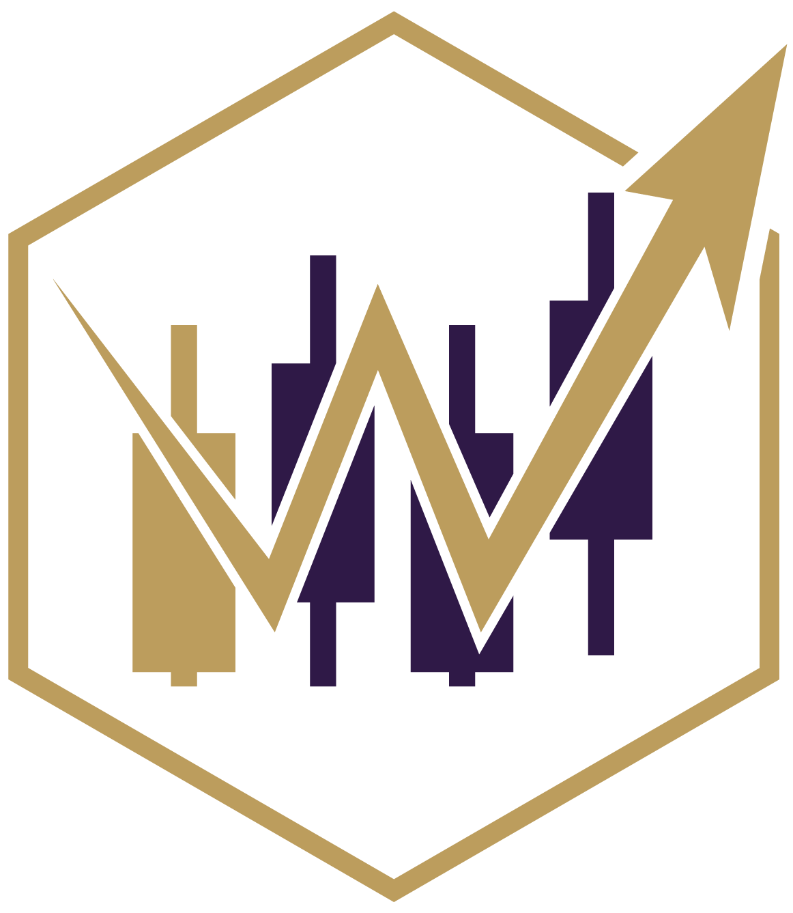
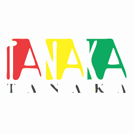
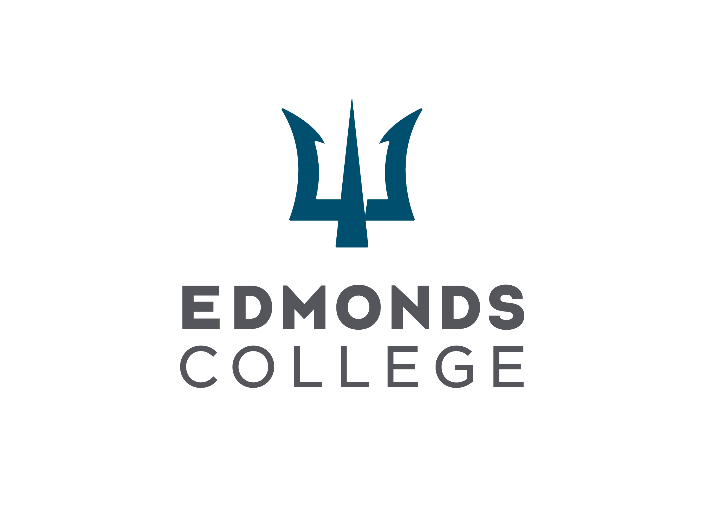

Software Engineer
Elise Poniman
Hi, I'm Elise Poniman, a recent CS graduate from UW Seattle focused on full-stack software development. I build end-to-end applications across frontend, backend, databases, and infrastructure. This site contains my projects and blogs, where I break down the systems, the technical decisions behind them, and what I learned along the way. Feel free to reach out regarding opportunities, collaborations, or just to connect about software engineering and technology!
Featured Work
Project Blogs
These are the main technical writeups where I explain the systems I built, the problems I worked on, and the decisions behind the implementation.
Backend Infrastructure
Running a Scalable Poker Bot Competition Platform
Behind the scenes of building and scaling infrastructure for a live multiplayer poker bot competition.
Recommendation Algorithm
Building a Recommendation Algorithm for a Student Social App
How I replaced a graph database idea with Jaccard Similarity, MinHashing, and LSH to match UW students based on shared interests.
Personal Background
Education, Experience, and Projects
A more standard view of my background, including school, work experience, technical projects, and certification.
Education
Paul G. Allen School of Computer Science & Engineering
University of Washington, Seattle
September 2023 – December 2025
Bachelor of Science in Computer Science, GPA: 3.74
Experiences
Software Engineer - CRM
Community Dreams Foundation
March 2026 – Present
Improved project tracking consistency and reduced workflow mistakes for project managers by developing CRM pipeline systems with stricter validation, activity tracking, and automated follow-up reminders.
Increased visibility into project progress and client follow-ups by building full-stack internal workflow tools using React, TypeScript, Supabase, and PostgreSQL.

Software Engineer
UW Algorithmic Trading Club - Husky Holdem
June 2025 – August 2025
Improved reliability of large-scale poker simulations supporting 90+ participants and hundreds of game runs by developing infrastructure to coordinate concurrent matches and automate simulation workflows.
Increased scalability and reduced interference between active games by building containerized backend systems for isolated user-submitted bot execution and distributed match processing using Python, Docker, and RabbitMQ.

Software Engineer Intern
Tanaka
July 2023 – September 2023
Improved inventory and product visibility for 20+ employees managing 50+ products by developing internal web tools for pricing, stock tracking, and product availability monitoring.
Improved warehouse stock awareness by building internal management systems with low-stock notifications and database-driven workflow features using PHP, MySQL, HTML, CSS, and JavaScript.
Improved accuracy of financial and inventory reporting by identifying and fixing SQL query and business logic errors affecting product asset calculations.
Teaching Assistant
Paul G. Allen School - UW
March 2025 – June 2025
Supported 30+ students weekly by teaching Flutter programming concepts, debugging application behavior, and helping students resolve issues related to development environments, application logic, and code fixes.

Math Tutor
Edmonds College
March 2022 – March 2023
Helped college students strengthen their understanding of algebra, calculus, and introductory mathematics through one-on-one tutoring across different ages, backgrounds, and learning styles.
Projects
Friendly - Husky Coding Project
September 2024 – June 2025
Improved user discovery and community engagement by developing a social media platform that recommends UW students with similar interests through similarity-based matching systems.
Increased scalability and maintainability of social features by building full-stack application components using React, TypeScript, MySQL, and graph-based relationship modeling.
Distributed System Key-Value Store
September 2024 – December 2024
Developed a fault-tolerant distributed key-value store in Java using Multi-Paxos for strong consistency and 2-Phase Commit for multi-key transaction support.
Crime Finder - Mobile App
March 2024 – June 2024
Collaborated with two team members to build a Flutter mobile app that visualizes Seattle crime data and explores a more accessible way to view local safety information.
BinGenius - Third Prize Hackathon on Eduhacks
January 2024
Led a 5-member team to build an AI trash-sorting simulation within 24 hours by setting milestones, dividing work, and guiding implementation, resulting in a third-place hackathon win.
Certification
AWS Certified Solutions Architect - Associate
Valid through March 2028
Resume
Resume Preview
A quick preview of my resume with a downloadable version available below.